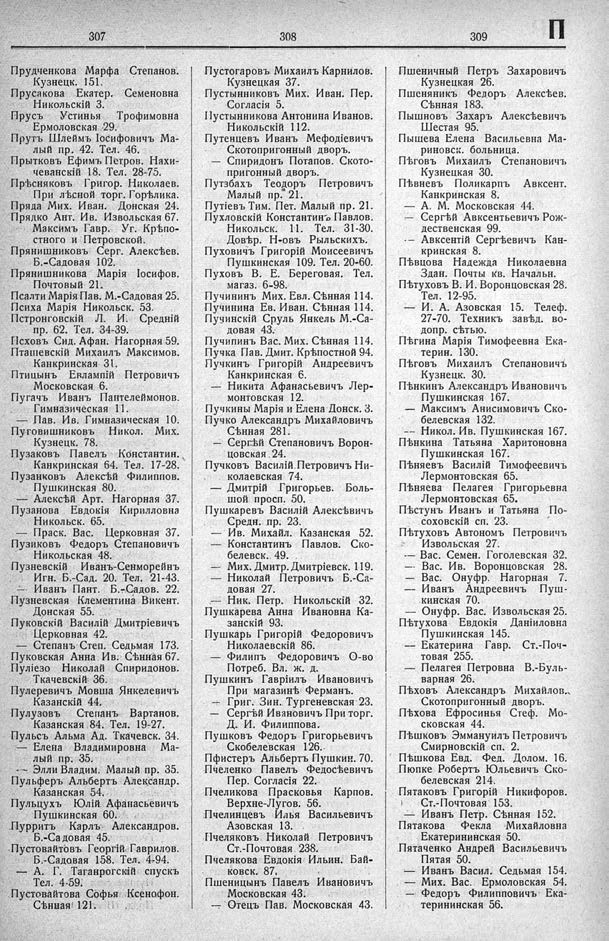

Лист источника 453
Скан

Распознанный текст
307
Прудченкова Марфа Степанов.
Кузнецк. 151.
Прусакова Екатер. Семеновна
Никольскій 3.
Прусъ Устинья Трофимовна
Ермоловская 29.
Прутъ Шлеймъ Іосифовичъ Ма-
лый пр. 42. Тел. 46.
Прытковъ Ефимъ Петров. Нахи-
чеванскій 18. Тел. 28-75.
Прѣсняковъ Григор. Николаев.
При лѣсной торг. Горѣлика.
Пряда Мих. Иван. Донская 24.
Прядко Ант. Ив. Извольская 67.
— Максимъ Гавр. Уг. Крѣпо-
стного и Петровской.
Прянишниковъ Серг. Алексѣев.
Б.-Садовая 102.
Прянишникова Марія Іосифов.
Почтовый 21.
Псалти Марія Пав. М.-Садовая 25.
Психа Марія Никольск. 53.
Пстронговскій Л. И. Средній
пр. 62. Тел. 34-39.
Псховъ Сид. Афан. Нагорная 59.
Пташевскій Михаилъ Максимов.
Канкринская 31.
Птицынъ Евлампій Петровичъ
Московская 6.
Пугачъ Иванъ Пантелеймонов.
Гимназическая 11.
— Пав. Ив. Гимназическая 10.
Пуговишниковъ Никол. Мих.
Кузнецк. 78.
Пузаковъ Павелъ Константин.
Канкринская 64. Тел. 17-28.
Пузанковъ Алексѣй Филиппов.
Пушкинская 80.
— Алексѣй Арт. Нагорная 37.
Пузанова Евдокія Кирилловна
Никольск. 65.
— Праск. Вас. Церковная 37.
Пузиковъ Федоръ Степановичъ
Никольская 48.
Пузневскій Иванъ-Сенморейнъ
Игн. Б.-Сад. 20. Тел. 21-43.
— Иванъ Пант. Б.-Садов. 22.
Пузневская Клементина Викент.
Донская 55.
Пуковскій Василій Дмитріевичъ
Церковная 42.
— Степанъ Степ. Седьмая 173.
Пуковская Анна Ив. Сѣнная 67.
Пуліезо Николай Спиридонов.
Ткачевскій 36.
Пулеревичъ Мовша Янкелевичъ
Казанскій 44.
Пулузовъ Степанъ Вартанов.
Казанская 84. Тел. 19-27.
Пульсъ Альма Ад. Ткачевск. 34.
— Елена Владимировна Ма-
лый пр. 35.
— Элли Владим. Малый пр. 35.
Пульферъ Альбертъ Александр.
Казанская 54.
Пульцухъ Юлій Афанасьевичъ
Пушкинская 60.
Пурритъ Карлъ Александров.
Б.-Садовая 45.
Пустовайтовъ Георгій Гаврилов.
Б.-Садовая 158. Тел. 4-94.
— А. Г. Таганрогскій спускъ
Тел. 4-59.
Пустовайтова Софья Ксенофон.
Сѣнная 121.
308
Пустогаровъ Михаилъ Карнилов.
Кузнецкая 37.
Пустынниковъ Мих. Иван. Пер.
Согласія 5.
Пустынникова Антонина Иванов.
Никольскій 112.
Путенцевъ Иванъ Мефодіевичъ
Скотопригонный дворъ.
— Спиридонъ Потапов. Ското-
пригонный дворъ.
Путзбахъ Теодоръ Петровичъ
Малый пр. 21.
Путіевъ Тим. Пет. Малый пр. 21.
Пухловскій Константинъ Павлов.
Никольск. 11. Тел. 31-30.
Довѣр. Н-овъ Рыльскихъ.
Пуховичъ Григорій Моисеевичъ
Пушкинская 109. Тел. 20-60.
Пуховъ В. Е. Береговая. Тел.
магаз. 6-98.
Пучининъ Мих. Евл. Сѣнная 114.
Пучинина Ев. Иван. Сѣнная 114.
Пучинскій Сруль Янкель М.-Са-
довая 43.
Пучипинъ Вас. Мих. Сѣнная 114.
Пучка Пав. Дмит. Крѣпостной 94.
Пучкинъ Григорій Андреевичъ
Канкринская 6.
— Никита Афанасьевичъ Лер-
монтовская 12.
Пучкины Марія и Елена Донск. 3.
Пучко Александръ Михайловичъ
Сѣнная 281.
— Сергѣй Степановичъ Ворон-
цовская 24.
Пучковъ Василій Петровичъ Ни-
колаевская 74.
— Дмитрій Григорьев. Боль-
шой просп. 50.
Пушкаревъ Василій Алексѣевичъ
Средн. пр. 23.
— Ив. Михайл. Казанская 52.
— Константинъ Павлов. Ско-
белевск. 49.
— Мих. Дмитр. Дмитріевск. 119.
— Николай Петровичъ Б.-Са-
довая 27.
— Ник. Петр. Никольскій 32.
Пушкарева Анна Ивановна Ка-
занскій 93.
Пушкарь Григорій Федоровичъ
Николаевскій 86.
— Филипъ Федоровичъ О-во
Потреб. Вл. ж. д.
Пушкинъ Гавріилъ Ивановичъ
При магазинѣ Ферманъ.
— Григ. Зин. Тургеневская 23.
— Сергѣй Ивановичъ При торг.
Д. И. Филиппова.
Пушковъ Федоръ Григорьевичъ
Скобелевская 126.
Пфистеръ Альбертъ Пушкин. 70.
Пчеленко Павелъ Ѳедосѣевичъ
Пер. Согласія 22.
Пчеликова Прасковья Карпов.
Верхне-Лугов. 56.
Пчелинцевъ Илья Васильевичъ
Азовская 13.
Пчеляковъ Николай Петровичъ
Ст.-Почтовая 238.
Пчелякова Евдокія Ильин. Бай-
ковск. 87.
Пшеницынъ Павелъ Ивановичъ
Московская 43.
— Отецъ Пав. Московская 43.
309
П
Пшеничный Петръ Захаровичъ
Кузнецкая 26.
Пшеняникъ Федоръ Алексѣев.
Сѣнная 183.
Пышновъ Захаръ Алексѣевичъ
Шестая 95.
Пышева Елена Васильевна Ма-
риновск. больница.
Пѣговъ Михаилъ Степановичъ
Кузнецкая 30.
Пѣвневъ Поликарпъ Авксент.
Канкринская 8.
— А. М. Московская 44.
— Сергѣй Авксентьевичъ Рож-
дественская 99.
-- Авксентій Сергѣевичъ Кан-
кринская 8.
Пѣвцова Надежда Николаевна
Здан. Почты кв. Начальн.
Пѣтуховъ В. И. Воронцовская 28.
Тел. 12-95.
— И. А. Азовская 15. Телеф.
27-70. Техникъ завѣд. во-
допр. сѣтью.
Пѣгина Марія Тимофеевна Ека-
терин. 130.
Пѣговъ Михаилъ Степановичъ
Кузнецк. 30.
Пѣнкинъ Александръ Ивановичъ
Пушкинская 167.
— Максимъ Анисимовичъ Ско-
белевская 132.
-- Никол. Ив. Пушкинская 167.
Пѣнкина Татьяна Харитоновна
Пушкинская 167.
Пѣняевъ Василій Тимофеевичъ
Лермонтовская 65.
Пѣняева Пелагея Григорьевна
Лермонтовская 65.
Пѣстунъ Иванъ и Татьяна По-
соховскій сп. 23.
Пѣтуховъ Автономъ Петровичъ
Извольская 27.
— Вас. Семен. Гоголевская 32.
— Вас. Ив. Воронцовская 28.
— Вас. Онуфр. Нагорная 7.
— Иванъ Андреевичъ Пуш-
кинская 70.
— Онуфр. Вас. Извольская 25.
Пѣтухова Евдокія Даніиловна
Пушкинская 145.
— Екатерина Гавр. Ст.-Поч-
товая 255.
— Пелагея Петровна В.-Буль-
варная 26.
Пѣховъ Александръ Михайлов.
Скотопригонный дворъ.
Пѣхова Ефросинья Стеф. Мо-
сковская 44.
Пѣшковъ Эммануилъ Петровичъ
Смирновскій сп. 2.
Пѣшкова Евд. Фед. Долом. 16.
Пюпке Робертъ Юльевичъ Ско-
белевская 214.
Пятаковъ Григорій Никифоров.
Ст.-Почтовая 153.
— Иванъ Петр. Сѣнная 152.
Пятакова Фекла Михайловна
Екатерининская 50.
Пятаченко Андрей Васильевичъ
Пятая 50.
— Иванъ Васил. Седьмая 154.
— Мих. Вас. Ермоловская 54.
— Федоръ Филипповичъ Ека-
терининская 56.